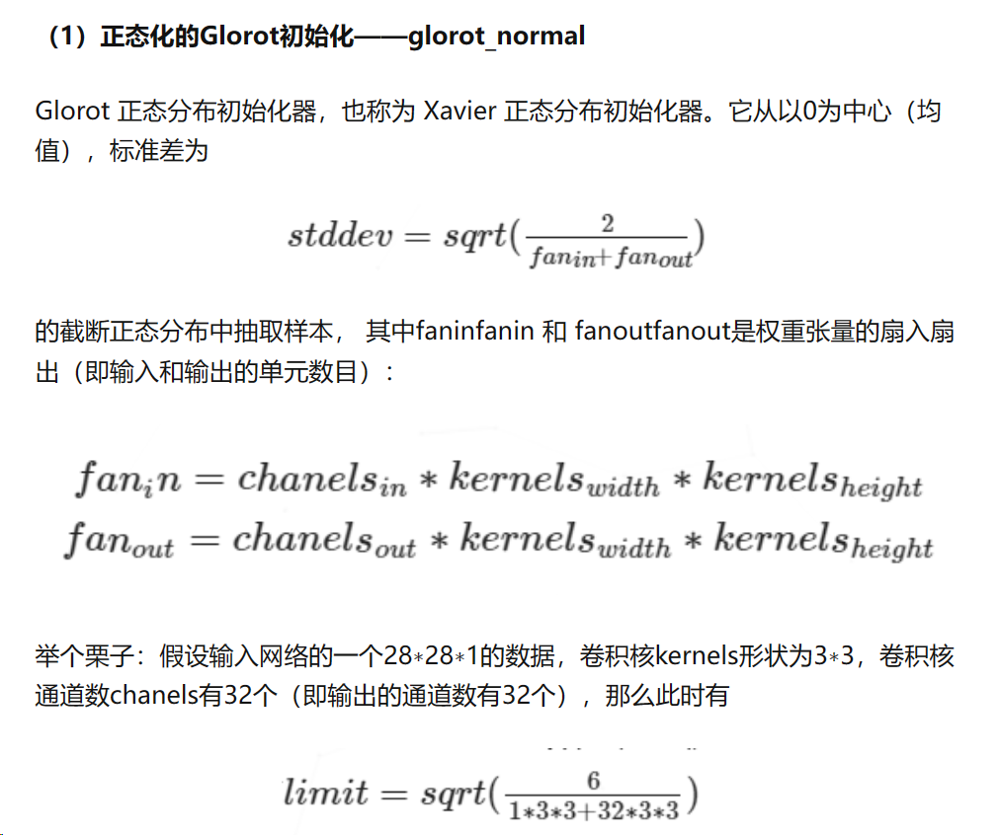
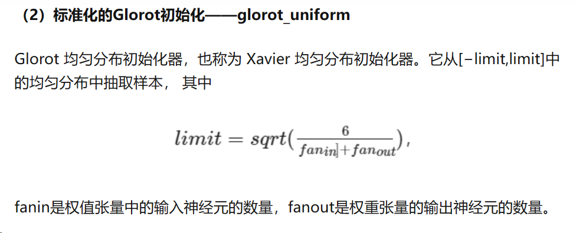
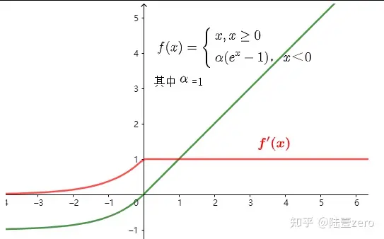

神经网络经典问题
1 简介
这里介绍一些在初学过程中可能碰到的一些常见的经典问题，其实还是蛮有意思的，就当成一种经验的积累。
这篇博客应该会一直更新，但是可能最后会很大，可能会分好几个，或者是分类一下。
2 预训练阶段
2.1 神经网络参数的初始化方式有哪些，为什么不能把w都初始化成一个值？
其实不同的初始化方式，就是来把w初始化成不同的随机值。首先说一下为什么不能把w初始成同一个值，尤其是0。如果全为0，那么在传播的时候权重全是0，那任何的梯度都不会得到计算。再说为什么不能把w初始化成一个值，主要是可能产生对称性问题，下面会说。所以说，提出很多初始化参数的方法，这样的话会解决参数产生以下三个问题：
- 避免对称性问题：如果所有的权重都被初始化为相同的值，那么在前向传播中，所有的神经元将计算相同的线性变换，导致它们产生相同的输出。这将导致网络中的对称性问题，使得不同神经元无法独立地学习和表示不同的特征。（对称性问题会在零初始化部分进行进一步详细解释）
- 保持梯度稳定性：在反向传播过程中，梯度的计算和传播对于网络的训练至关重要。如果参数初始化不合适，梯度可能会出现梯度消失或梯度爆炸的问题。过大的初始化参数导致梯度爆炸，绝对值过小的参数导致梯度消失。
- 信号传播的稳定性：参数初始化还可以影响信号在网络中的传播稳定性。每个神经元的输出会作为下一层神经元的输入，如果信号传播过程中的方差变化过大，可能会导致网络中的信号失真或放大，影响网络的性能。合适的参数初始化方法可以帮助平衡每一层的信号传播，确保合适的信息流动。
初始化方式有如下常见的几种：
- 正态分布随机初始化(normal)：随机初始化是很多人经常使用的方法，一般初始化的权重为高斯或均匀分布中随机抽取的值。然而这是有弊端的，一旦随机分布选择不当，就会导致网络优化陷入困境。当我们选择 sigmoid 或 tanh 激活函数时，函数值 sigmoid(⋅) 或 tanh(⋅)会停留在一个很平坦的地方，激活值接近饱和，导致梯度下降时，梯度很小，学习变得缓慢。但也不是说权重值越小越好，如果权重值过小，会导致在反向传播时计算得到很小的梯度值，在不断的反向传播过程中，引起梯度消失。
- 均匀分布随机初始化(uniform)：上述两种(正态和均匀)基于固定方差的初始随机化方法中，关键点在于如何设置方差σ**2。过大或过小的方差都会导致梯度下降缓慢，网络训练效果不好等问题。
- xavier 初始化（Glorot初始化）：我们需要让类别空间和样本空间之间的分布差异不要太大，也就是它们之间的方差尽可能相等。Glorot 正态分布初始化器和标准化的Glorot初始化。Xavier初始化主要用于tanh，不适用于ReLU。


2.2 激活函数都有哪些，各有哪些利弊，为什么？
如果不用激活函数，每一层输出都是上层输入的线性函数，无论神经网络有多少层，输出都是输入的线性组合，这种情况就是最原始的感知机。如果使用的话，激活函数给神经元引入了非线性因素，使得神经网络可以任意逼近任何非线性函数，这样神经网络就可以应用到众多的非线性模型中。
1 Sigmoid激活函数：
优点：
- Sigmoid函数的输出在(0,1)之间，输出范围有限，优化稳定，可以用作输出层。
- 连续函数，便于求导。
缺点：
- sigmoid函数在变量取绝对值非常大的正值或负值时会出现饱和现象，意味着函数会变得很平，并且对输入的微小改变会变得不敏感。在反向传播时，当梯度接近于0，权重基本不会更新，很容易就会出现梯度消失的情况，从而无法完成深层网络的训练。
- sigmoid函数的输出不是0均值的，会导致后层的神经元的输入是非0均值的信号，这会对梯度产生影响。
- 计算复杂度高，因为sigmoid函数是指数形式。
2 Tanh激活函数：
sigmoid函数如上文所说有一个缺点就是输出不以0为中心，使得收敛变慢的问题。而Tanh则就是解决了这个问题。Tanh就是双曲正切函数，取值范围为[-1,1]。
但是仍然存在梯度饱和与exp计算的问题。
3 ReLU激活函数：
- 使用ReLU的SGD算法的收敛速度比 sigmoid 和 tanh 快。
- 在x>0区域上，不会出现梯度饱和、梯度消失的问题。
- 计算复杂度低，不需要进行指数运算，只要一个阈值就可以得到激活值。
- 代表性稀疏，ReLu会使一部分神经元的输出为0，这样就造成了网络的稀疏性，并且减少了参数的相互依存关系，缓解了过拟合问题的发生。
缺点：
- ReLU的输出不是0均值的。
- Dead ReLU Problem(神经元坏死现象)：ReLU在负数区域被kill的现象叫做dead relu。ReLU在训练的时很“脆弱”。在x<0时，梯度为0。这个神经元及之后的神经元梯度永远为0，不再对任何数据有所响应，导致相应参数永远不会被更新。
产生这种现象的两个原因：参数初始化问题；learning rate太高导致在训练过程中参数更新太大。
解决方法：采用Xavier初始化方法，以及避免将learning rate设置太大或使用adagrad等自动调节learning rate的算法。
4 Leaky ReLU激活函数：
渗漏整流线性单元(Leaky ReLU)，为了解决dead ReLU现象。用一个类似0.01的小值来初始化神经元，从而使得ReLU在负数区域更偏向于激活而不是死掉.

主要就是为了解决relu输出为0的问题。如图所示，在输入小于0时，虽然输出值很小但是值不为0。 leakyrelu激活函数一个缺点就是它有些近似线性，导致在复杂分类中效果不好。
5 ELU激活函数

优点
- 它在所有点上都是连续且可微的。
- 与其他线性非饱和激活函数（如 ReLU 及其变体）相比，它可以缩短训练时间。
- 与 ReLU 不同，它没有神经元死亡的问题。这是因为 ELU 的梯度对于所有负值都是非零的。
- 作为非饱和激活函数，它不会遭受梯度爆炸或消失的问题。
- 与其他激活函数（如 ReLU 和变体、Sigmoid 和双曲正切）相比，它实现了更高的准确度。
缺点
与 ReLU 及其变体相比，它的计算速度较慢，因为负输入涉及非线性。然而，在训练期间，这被 ELU 更快的收敛所补偿。但在测试期间，ELU 的执行速度会比 ReLU 及其变体慢。
6 Softmax激活函数:
在多分类问题中，我们通常回使用softmax函数作为网络输出层的激活函数，softmax函数可以对输出值进行归一化操作，把所有输出值都转化为概率，所有概率值加起来等于1，softmax的公式为：
- 在零点不可微。
- 负输入的梯度为零，这意味着对于该区域的激活，权重不会在反向传播期间更新，因此会产生永不激活的死亡神经元。
2.3 如何防止/缓解过拟合？
- 数据集扩充（Data Augmentation）：通过对训练数据进行随机变换和扩充，增加数据的多样性，提高模型的泛化能力。
- 正则化（Regularization）：添加正则化项到损失函数中，限制模型的复杂度，防止过度拟合。常见的正则化方法包括L1正则化和L2正则化。
- Dropout：在训练过程中，以一定的概率随机将神经元的输出置为零，强制网络学习更加鲁棒和独立的特征表示，减少神经元之间的依赖关系。
- 提前停止（Early Stopping）：在训练过程中，监控模型在验证集上的性能，当性能不再提升时停止训练，避免过拟合。
- 模型复杂度控制：减少模型的复杂度，避免网络过大过复杂，通过减少参数数量、调整网络结构或使用低维嵌入等方法来控制模型的复杂度。
- 批归一化（Batch Normalization）：对网络的每一层进行批归一化操作，加速收敛，控制梯度传播，减少过拟合。
- 使用数据增强方式。
2.4 batch_size的大小?为什么会影响训练的有效性曲线？
Batch 的选择，首先决定的是下降的方向。如果数据集比较小，完全可以采用全数据集 （ Full Batch Learning ）的形式，这样做至少有 2 个好处：其一，由全数据集确定的方向能够更好地代表样本总体，从而更准确地朝向极值所在的方向。其二， Full Batch Learning 可以使用Rprop 只基于梯度符号并且针对性单独更新各权值。
在合理范围内，增大 Batch_Size 有何好处？
- 内存利用率提高了，大矩阵乘法的并行化效率提高。
- 跑完一次 epoch（全数据集）所需的迭代次数减少，对于相同数据量的处理速度进一步加快。
- 在一定范围内，一般来说 Batch_Size 越大，其确定的下降方向越准，引起训练震荡越小。
盲目增大 Batch_Size 有何坏处？ 内存利用率提高了，但是内存容量可能撑不住了。 跑完一次 epoch（全数据集）所需的迭代次数减少，要想达到相同的精度，其所花费的时间大大增加了，从而对参数的修正也就显得更加缓慢。 Batch_Size 增大到一定程度，其确定的下降方向已经基本不再变化。
基本上就是类别数目的十倍左右，比如分类是10类，那batch一般是64或128。但是也不一定，如果样本数目很大，而且gpu性能很好，比如有几百万张+4090，可以考虑再调大一点。
2.5 数据增强方式
- 随机裁剪（Random Cropping）：随机从图像中裁剪出不同的区域，以增加位置和尺度的变化。
- 随机翻转（Random Flipping）：随机水平或垂直翻转图像，增加镜像变换的多样性。
- 随机旋转（Random Rotation）：随机旋转图像一定角度，增加旋转变换的多样性。
- 调整亮度、对比度和饱和度（Adjusting Brightness, Contrast, and Saturation）：通过对图像的亮度、对比度和饱和度进行随机调整，增加图像的变化。
- 添加噪声（Adding Noise）：向图像中添加随机噪声，例如高斯噪声或椒盐噪声，增加模型对噪声的鲁棒性。
- 图像缩放和平移（Image Scaling and Translation）：随机对图像进行缩放和平移操作，改变图像的尺度和位置。
- 随机变形（Random Distortion）：对图像进行随机的弹性变形，增加形变的多样性。
- 随机剪切（Random Erasing）：随机在图像中选择一个矩形区域并将其像素值替换为随机值，模拟遮挡或缺失的情况。
- 颜色空间变换（Color Space Transformations）：对图像进行颜色空间的变换，如灰度化、RGB到HSV的转换等。
3 训练阶段
3.1 梯度爆炸和梯度消失产生的原因以及解决办法
梯度消失的原因：深层网络+反向传播的链式法则，不合适的损失函数：sigmoid。
梯度消失解决办法：使用导数比较大比较稳定的损失函数，比如relu； Inception类型的网络，Inception网络是由有多个Inception模块和少量的汇聚层堆叠而成，即把串行操作尽可能变为并行操作，使用resent。
梯度爆炸的原因：梯度爆炸一般出现在深层网络和权值初始化值太大的情况下。也是深层网络+反向传播的链式法则。
梯度爆炸解决办法：选择合适的初始化方式，比如：xavier 初始化，uniform初始化；使用权重衰退等正则项进行限制。梯度截断等。
另外，batch_normation，即批量正则化或者是层正则化，可以使层之间独立性变高，也可以缓解梯度爆炸和梯度消失。
3.2 训练时往往底部数据区更新比较慢，解释原因，给出解决办法？
底部数据区更新较慢的现象通常是由于梯度传播的限制造成的。梯度传播是指在反向传播过程中，梯度从输出层向输入层传递的过程。当网络层数较深时，梯度在每一层传播过程中可能会逐渐变小，导致底部数据区的参数更新速度较慢。
解决办法：
- 使用合适的激活函数：选择具有非饱和性质和较大梯度的激活函数，如ReLU、LeakyReLU等，可以帮助减轻梯度消失问题。
- 使用批归一化（Batch Normalization）：批归一化可以通过规范化每一层的输入，加速收敛并减少梯度消失的问题。
- 使用残差连接（Residual Connections）：引入残差连接可以提供跨层的捷径，使得梯度更容易在网络中传播，有助于缓解梯度消失问题。
- 使用梯度裁剪（Gradient Clipping）：梯度裁剪可以限制梯度的范围，防止梯度爆炸问题，使训练更加稳定。
- 使用预训练模型或迁移学习：通过使用预训练模型或迁移学习，可以利用已经学到的特征表示，减少对底部数据区的训练需求，从而加快收敛速度。
3.3 RNN中的梯度消失和CNN的梯度消失有区别
NN中的梯度消失/爆炸和MLP/CNN中的梯度消失/爆炸含义不同：MLP/CNN中不同的层有不同的参数，各是各的梯度；而 RNN 中同样的权重在各个时间步共享，最终的梯度 g 等于各个时间步的梯度 的和。
RNN中的总的梯度不会消失。即便梯度越传越弱，那也只是远距离的梯度消失，由于近距离的梯度不会消失，所有梯度之和并不会消失。RNN 所谓梯度消失的真正含义是，梯度被近距离梯度主导，导致模型难以学到远距离的依赖关系。
4 训练后阶段
4.1 神经网络不收敛的原因
- 忘记对你的数据进行归一化
- 忘记检查输出结果
- 没有对数据进行预处理
- 没有使用任何的正则化方法
- 使用了一个太大的 batch size
- 使用一个错误的学习率
- 在最后一层使用错误的激活函数
- 网络包含坏的梯度，梯度爆炸和梯度消失
- 网络权重没有正确的初始化
- 使用了一个太深的神经网络